Lesser Matters
The Radio Dept.
2003 • 13 songs • 43:15
Genres: Dream Pop, Indie Pop
Shoegaze, Noise Pop, Twee Pop, Indietronica
Boasting glitchy and lo-fi instrumentation, Lesser Matters brings a relaxing, intimate take to the dream pop world.
This album is warm, melancholic, soothing and introspective.

Happier and glitchier!
I'm liking the indie vibe